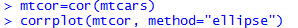
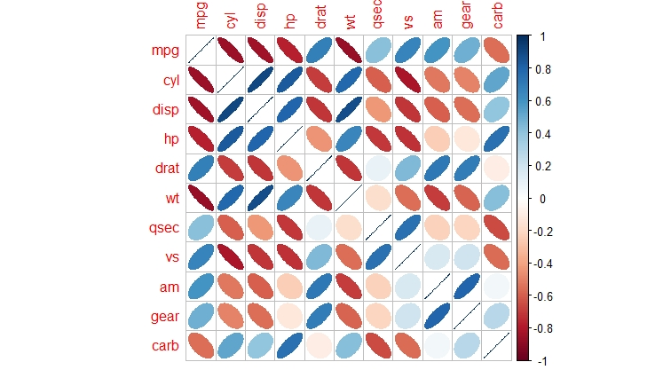

Construct Correlation plots
Introduction
A correlation plot is a two-dimensional plot showing the relationship between multiple pairs of numeric variables. The strength of the relationship is shown by the shape of the ellipse.
Knowledge
The R syntax of correlation plot is
corrplot (corr, method= , type = , col = , bg =)
corr: the correlation matrix of variables to visualize
method: the default method is “circle”. The areas of circles show the absolute value of corresponding correlation coefficients. If use “ellipse”, then the direction of the ellipse shows the negative or positive correlation, and the area of the ellipse shows the corresponding correlation coefficients.
type: character in “full”, “upper” or “lower”, displaying full matrix, lower triangular or upper triangular matrix. The default setting is “full”.
col: Color of glyphs.
bg: Background color
A Youtube video on how to make a complex correlation plot is here
https://www.youtube.com/watch?v=jxUiIFj2l-s
In a correlation plot, the ellipse going from the top left corner to the bottom right corner represents a negative correlation between the two variables. The ellipse from the bottom left to the top right represents a positive correlation. The strength of the correlation is shown by the thickness of the ellipse. A very narrow ellipse shows a very strong correlation, and a very wide ellipse shows a weak correlation. If the correlation is represented by a circle, that means no correlation between the two variables.
Key Points to Remember
A correlation plot shows the strength of correlation between two quantitative variables. The R function is corrplot().
Practice and Reflection
Practice
Example 4: Plot a correlation matrix between the variables in the dataset mtcars. The R code is

The graph is shown in figure 6

Figure 6. A correlation plot between every two numeric variables in the data set mtcars.
In figure 6, the red ellipse representing the relationship between miles per gallon (mpg) and weight (wt) shows us a negative correlation. A positive correlation is shown by an ellipse in figure 6 between number of cylinder (cyl) and display (disp).
Reflection
Activity 3: Use the R dataset iris and make a correlation matrix of variables containing only numeric variables in iris data. Generate a correlation plot using ellipse method.
Assessment
Use the R data airquality to generate a correlation plot to show the relationship between variables. Identify the positive and negative correlation.